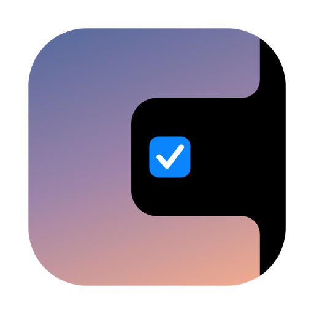

Badges & live pill
See what is due today on the pill itself. Badges update quietly in the background.

A quiet black notch on your screen edge. Hover to peek at your Notion pages and tasks, click to check things off, press a hotkey to capture. A menu bar app for your Notion pages that stays out of your way.
Works with Notion · macOS 14+
Resting pill, hover strip, expanded panel. One shape.
Brink is a notch app for Mac that turns the edge of your screen into a fast lane to the Notion pages and tasks you actually use.
Rest your cursor on the notch and a strip of your pinned pages unfolds. Peek at the next tasks, glance at a badge, and move on. Resting pill, strip and panel are one morphing shape with a liquid spring, and opening and closing mirror each other.
Press ⌥⇧Space from any app, type, hit return. Natural dates work in English and Czech, so “friday” and “pátek” both land on the right day. Perfect for Notion tasks on Mac without the Notion round trip.
Pages render white on black and edit like a single Markdown document where each line is one block. Type / for headings, to-dos, toggles, callouts and more. Find in page with ⌘F.
See what is due today on the pill itself. Badges update quietly in the background.
Prefer the top of the screen? A compact list lives in the menu bar too, a proper menu bar app for your Notion pages when you want one.
A Notion widget for Mac: pin your task list to the desktop or Notification Center.
A share extension in every app. Send a link, selection or file straight to a page or database.
Global shortcuts for quick capture and for opening your last pin. Rebind them in Settings.
Group pins into folders that unfold on the strip. Pin a filtered and sorted database view, such as “My open tasks by due date”, and check things off without opening the full database.
Brink is calm by default and flexible when you want it.
Your token lives in the macOS Keychain. Brink has no server of its own, no analytics, no ads and no telemetry. It talks to the Notion API and nothing else.
Read the privacy policyNo. Brink is an independent app and is not affiliated with, endorsed by, or sponsored by Notion Labs, Inc. It works with Notion through the public Notion API.
A Mac running macOS 14 or later, and a Notion internal integration. You create the integration yourself in Notion, paste its token into Brink, and share the pages you want with it. Not seeing a page? Share it with your integration in Notion.
Yes, for what you have already opened. Pages are cached so the panel opens instantly, and edits made offline are queued and synced when you are back online.
Only between your Mac and Notion. The token is stored in the macOS Keychain, and there is no server, analytics or tracking.
Brink is free. Download the latest version from GitHub Releases.
Yes. Choose the edge (left, right or top) and the display in Settings. On a MacBook with a camera notch, Brink sits on the edge you pick, not over the camera.
Yes. Press ⌥⇧Space anywhere, type your task with a natural date such as “tomorrow 5pm”, and it is saved to the database you chose.
Choose Remove token in Brink’s settings, or remove the integration in Notion under Settings → Connections. Brink loses access immediately.
Free. macOS 14 or later. First launch: right-click Brink → Open (the app is not notarized yet).
Download for Mac · FreeWorks with Notion · Version 0.9.0